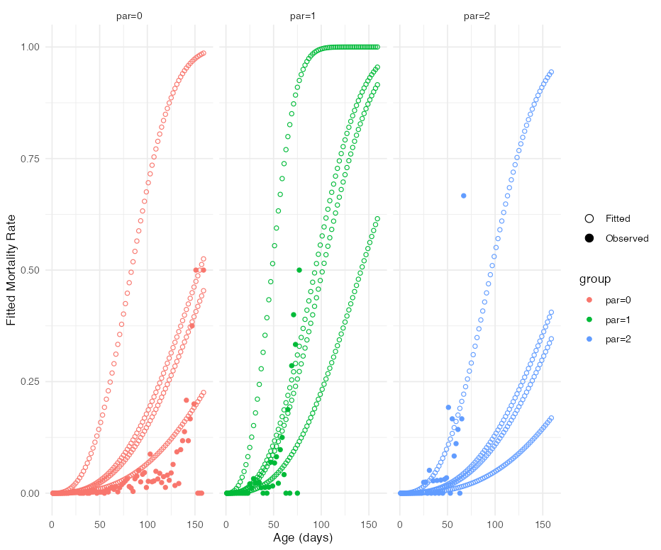

Description
lifelihood is an R package and a class of continuous time multi-event models which provide the joined likelihood of all the events in an individual life-history (time of maturity, reproductive events, death).
It requires R 4.1.0 or later, and:
- macOS (Apple silicon)
- Windows (Still some known issues)
- Linux
Quick start
library(lifelihood)
df <- fakesample
head(df)
df$type <- as.factor(df$type)
df$geno <- as.factor(df$geno)
clutchs <- c(
"clutch_start1", "clutch_end1", "clutch_size1",
"clutch_start2", "clutch_end2", "clutch_size2"
)
dataLFH <- as_lifelihoodData(
df = df,
sex = "sex",
sex_start = "sex_start",
sex_end = "sex_end",
maturity_start = "mat_start",
maturity_end = "mat_end",
clutchs = clutchs,
death_start = "death_start",
death_end = "death_end",
covariates = c("geno", "type"),
model_specs = c("gam", "lgn", "wei")
)
results <- lifelihood(
lifelihoodData = dataLFH,
path_config = system.file("configs/config.yaml", package = "lifelihood"),
seeds = c(1, 2, 3, 4)
)
summary(results)
#> === LIFELIHOOD RESULTS ===
#>
#> Sample size: 550
#>
#> --- Model Fit ---
#> Log-likelihood: -30491.599
#> AIC: 61019.2
#> BIC: 61096.8
#>
#> --- Key Parameters ---
#>
#> Mortality:
#> expt_death (Intercept) -0.912 (0.000)
#> expt_death eff_expt_death_par_1 -0.455 (0.000)
#> expt_death eff_expt_death_par_2 0.121 (0.000)
#> expt_death eff_expt_death_spore_1 -0.373 (0.000)
#> expt_death eff_expt_death_spore_2 -0.303 (0.000)
#> expt_death eff_expt_death_spore_3 -0.927 (0.000)
#> survival_param2 (Intercept) -0.480 (0.000)
#>
#> Maturity:
#> expt_maturity (Intercept) -1.527 (0.000)
#> expt_maturity eff_expt_maturity_par_1 0.134 (0.000)
#> expt_maturity eff_expt_maturity_par_2 0.074 (0.000)
#> maturity_param2 (Intercept) -5.900 (0.000)
#>
#> Reproduction:
#> expt_reproduction (Intercept) -1.780 (0.000)
#> expt_reproduction eff_expt_reproduction_par_1 -1.742 (0.000)
#> expt_reproduction eff_expt_reproduction_par_2 -1.166 (0.000)
#> reproduction_param2 (Intercept) -7.517 (0.000)
#> reproduction_param2 eff_reproduction_param2_par_1 0.222 (0.000)
#> reproduction_param2 eff_reproduction_param2_par_2 0.776 (0.000)
#> n_offspring (Intercept) -2.543 (0.000)
#>
#> --- Convergence ---
#> All parameters within bounds
#>
#> ======================Goodness of fit
coeff(results, "expt_death")
#> int_expt_death eff_expt_death_par_1 eff_expt_death_par_2 eff_expt_death_spore_1 eff_expt_death_spore_2 eff_expt_death_spore_3
#> -0.9116360 -0.4551437 0.1214695 -0.3729372 -0.3028974 -0.9274529
AIC(results)
#> 61019.2
BIC(results)
#> 61096.78
logLik(results)
#> -30491.6Prediction
prediction(results, "expt_death", type = "response") |> head()
#> 92.88023 92.88023 92.88023 92.88023 92.88023 92.88023Visualization
plot_fitted_event_rate(
results,
interval_width = 2,
event = "mortality",
use_facet = TRUE,
groupby = "par",
xlab = "Age (days)",
ylab = "Fitted Mortality Rate",
)
Learn more and find more examples in the documentation.